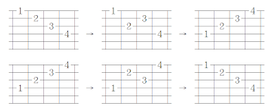

吉他的基本功
發布日期：2009-08-16
學吉他練習是很重要的一個過程, 但是練些什麼, 怎麼規劃練習的內容, 怎麼安排適當的 schedule, 然後練習才會有效率? 有效果?
那平常應該練些什麼呢? 爬格子? 音階? 節奏? 琶音? 即興? 每天練多久? …
這些我覺得都要練, 只是每個人的程度/狀況不一樣, 喜好的 Style 不一樣, 平常練習應該專注的東西也不相同. 我把一些我認為一個吉他手該練習、該具備的基本功, 還有我個人練習的一些方向 / 方式 / 思維列表出來, 有興趣的朋友不妨參考看看.
不過要把話說在前頭, 這些東西不是練個兩天, 兩週, 或者兩個月就會看的到成果, 除非一天花八個小時練琴, 否則少說練個幾年才有成果. 而且很多大師也都每天在練習的, 所以別問太多為什麼。
另外本文不是啥教學文, 這只是一些心得歸納, 大部分項目的詳細內容, 網路上都找的到. 如果說是教學文的話, 套句總舵主陳定南的話:


開始正題 (目錄開始)，我個人把練習的內容大致上分成幾個部分:
- 樂器技巧練習
- 基本功 (內功)
- 節奏訓練
- 吉他演奏技巧
一、樂器基本技巧練習
第一類是樂器技巧的練習, 其他樂器也都會有類似的練習, 對應到鋼琴大概就是哈農. 這邊就是吉他的手指強化訓練, 大概包含爬格子, 左手指強化訓練 … 這些東西, 大部分, 跟音樂還沒扯上關係, 但是都是為日後詮釋音樂的馬步. 是否需要做這種訓練, 是有爭議的. 但是我個人趨向是要的.
爬格子: 這是最常見的暖指練習. 主要目的就是要強化左手的靈活度, leagto (圓滑音) 的訓練. 爬格子的排列組合很多, 大致上分成: 四連音排列組合, 跳弦 (拆神經) … 等.
左手四連音 (螃蟹爬格子):
- 1234, 1243, 1342, 1324, 1423, 1432
- 2341, 2314, 2413, 2431, 2143, 2134
- 3412, 3421, 3124, 3142, 3241, 3214
- 4123, 4132, 4312, 4321, 4213, 4231
共有 24 種排列組合, 可以在吉他指板上任意把位練習, 這東西能夠保持左手手指的靈活度. 通常一段時間沒彈琴, 我會選擇爬一下格子, 作為暖身的預備.
另外一種螃蟹爬格子, 是跨弦的練習, 大概就是先彈第一弦, 之後彈第三弦, 以此類推. 小林信一這幾年很紅的地獄練習教本裡面, 一開始就有類似的練習.
還有一種原本左手是 1234 都彈同一跟弦, 改成 12 彈第六弦, 34 彈第五弦; 或者 13 彈第六弦, 24 彈第五弦 …. 諸如此類的排列組合.
左手手指的強化訓練: 特別針對左手的手指獨立的作的訓練, 這種訓練剛開始要注意練習的方式, 不要一下子就練太久, 要適度的休息.
- 小指訓練: 1343, 1242, 1434, 1424, 2434, 2343, … etc
- 無名指訓練: 1232, 2323 …
- 配合垂勾練習: 上述的左手各種排列組合, 都可以配合搥勾技巧練習, 特別是 124, 134 這樣的組合, 適當的配合搥勾技巧, 就夠做出很漂亮的速彈.
- 斜形 (/ 形 \形): 吉他大師 John Petrucci 介紹的一種手指獨立訓練練習方式, 如下圖.

樂器技巧的練習時機有幾個:
- 剛開始學習吉他的時候: 要讓初學者感覺, 手是我的 …. 但是完全沒練過吉他的純初學者不要急著練這些 …
- 一段時間沒練琴了: 很久沒碰琴了, 要把手感找回來.
- 每天開始練琴時: 取得手指頭的靈活度, 暖指
大概是這些時間點, 考慮自己的學習狀況作選擇性的練習. 然後練習時, 右手一律用 Alternative Picking (上下 Picking), Tone 則分別先後用 clean tone 和 distortion 練習, 把每一個音交代清楚.
因為這個練習跟音樂沒有直接的關係, 而且吉他又是一種二維的棋盤格子樂器, 所以發揮你的想像力, 想一些屬於自己的練習, 來增加練習的樂趣. 我小時候很喜歡玩五子棋, 所以每次在畫指版音階圖的時候, 都會想像成五子棋的棋子 XDD
提供一些想像力: 把上述提到的練習方式混搭, 例如爬格子 1234 + 斜行 \ 混合練習. 吉他大師 Lee Ritenour 有類似的練習介紹.
二、音樂演奏基本功
第二類是以音階, 和弦, 和節奏為元素的排列組合練習, 大概範圍有: 音階指型, 基本和弦和進行, 模進, 琶音, 節奏 … 等. 這些東西我習慣把它們統稱基本功 (內功 / 馬步). 這些東西會反映在日後採譜, 練習即興, 創作, 理解歌曲的速度, 熟練度等.
練習的不夠, 採譜就不容易快, 準; 彈奏時對音符的掌握會不夠精準 … 等. 所以這部分, 我覺得是有必要花心思練習的. 但是如何有效率的練習, 就看每個人的方式了! 這東西沒有練多久的問題, 只要還在彈琴, 就要持續練習. 即使是大師級的音樂家, 每天也都會練這些基本功, 所以每天一定要抽空練.
音階指型 (Scale Pattern)
有五個基本型 + 三種一弦三音. 五個基本型又可以衍生出一些應用:
- 大調音階: P1 ~ P5 (或者稱 Mi, Sol, La, Ti, Re 型)
- 小調音階: P1 ~ P5
- 大小調五聲音階: P1 ~ P5
- 藍調音階、和聲、旋律小調 ….
把大小調分開來看是因為兩者能夠熟練其轉換, 對於日後練習藍調會很有幫助.
※ 關於大小調的觀念請參考 大調音階 (Major Scale), 小調音階 (Minor Scale). 音階方面請參考 吉他音階學習引導, 音階基礎 及 音階學習地圖.
音階指型的訓練還要注意的是, 不管是上行還是下行, 建議要從根音開始, 根音結尾, 同時要把音名唱出來, 主要讓耳朵能夠辨識 Key Center 的概念, 這也是未來採譜的基礎之一.
※ 音感相關概念文字, 可以參閱: 吉他手怎麼訓練音感, 固定唱名? 還是首調唱名?, 關於唱名.
練習的調性可以按照五度圈來跑, 例如:
- 基數月份練順時針 (五度):
- 基數週都練 C -> G -> D -> A -> E -> B -> F# -> C#
- 偶數週練: C -> F -> Bb -> Eb -> Ab -> Db -> Gb
- 偶數月份練逆時針 (四度):
- 基數週: C# -> F# >B -> E -> A -> D -> G -> C
- 偶數週 Gb -> Db -> Ab -> Eb -> Bb -> F -> C
這種練習就看自己的時間狀況, 自行安排適當的 Schedule 練習. 目的就是要練到隨便指定一個調性, 要馬上 (2秒內) 找到是適當的把為位置, 超過兩秒都算不合格.
模進 (Sequence)
簡單說就是以音階為基礎, 作一些排列組合的練習. 常見的有: 四個一組 (16beat), 三個一組 (三連音), 三度音 (8beat or 16 beat), 五聲音階, 一弦三音 (六連音) … 等. 以下的數字是音階.
四個一組 (16 beat):
- 上行: 1234, 2345, 3456, 4567, 5671, ….
- 下行: 1765, 7654, 6543, 5432, 4321, …
- x 五個 Pattern,
三個一組 (三連音):
- 上行: 123, 234, 345, 456, 567, 671 …
- 下行: 176, 765, 654, 543, 432, 321 …
- x 五個 Pattern
三度音模進 (8 beat or 16 beat):
- 上行: 13, 24, 35, 46, 57, 61, 72, 1 …
- 下行: 16, 75, 64, 53, 42, 31, 27, 1 …
- x 五個 Pattern
五聲音階模進:
- 上行: 6123 1235 2356 3561 …
- 下行: 1653 6532 5321 3216 …
- x 五個 Pattern
Sequence 的種類百百種, 特別是喜歡玩 Riff, 喜歡玩即興樂手 (不只是吉他手), 類似的東西給一個和弦的範圍, 他可以以此為 base, 想出數十種變化. 所以上述前三種, 是我個人認為最最最最最最基本的. 想專心把 Solo, Riff 彈好, 想 Jam 的內容有變化, 這三種一定要花時間穩紮穩打的練. 切忌一味求快!!!
同樣的, 這部分也可以想一些屬於自己的排列組合來增加練習的樂趣. 但是不同於爬格子, 這部分會讓你覺得彈出來的東西會具備 ‘音樂性’, ‘可聽性’. 所以創作, 可以從這裡出發. 隨便舉一個例子, 以某一個音為基礎來彈音階, 像是 | 12 13 15 16 | 34 35 36 31 |, 這其中的規則應該不難發現, 還有很多類似的想法, 發揮想像力, 讓練習更有趣吧 :D
順階和弦與和弦進行 (Chord and Progression)
針對不同調性的順階和弦, 可以安排時間做練習. 常見的基本和弦指型五種: CGDAE, 利用這五種基本指型, 配上和弦指型簡化 + 調性 + 和弦進行, 這樣就有很多組合了. 換句話說, 每一個和弦, 至少都要能夠有五種以上的按法. 組合說明如下:
- CGDAE: 五種吉他和弦指型, 每一個都有基本形和變化型:
- 開放指型: 所有和弦種類, 最基本的和弦指型.
- 基本移動和弦 (Barre Chord): 大三 (X), 小三 (Xm), 大七 (Xmaj7), 小七 (Xm7), 屬七 (X7), 減七 (Xdim7), Xm7-5 ….
- 應用和弦: Xsus4, Xadd9, X6, X69, Slash Chord.
- 進階與延伸應用: Extended Chord ….
- 配合調性: 練習方式可以參考練習音階的方式, 調性以五度圈方式跑, 和弦進行也是.
- 配合和弦進行: 像是 卡農進行, 6415, 251, 1625, 1564 … etc …
- CGDAE 的簡化吉他指型: 簡化五種指型, 所形成的另一種和弦按法, 練習概念第一個基本型變化.
- 這部份如果以七和弦做基本的話, 變化會很大, 也可以加入很多創意. 例如: Emaj7sus2 簡化 (省略五六弦) 後會變成 B; Fmaj7 簡化五六弦會得到 Am …. etc, 或者行成另外一種簡化方式: Shell Chord.
- 或者改變簡化的方式, 例如 E 型的 A 和弦, 保留第六弦 (用拇指按), 省略四五弦, 這樣就會找到很多盧廣仲常用的那種案法. 他那些按法只是以七和弦做基礎而已, 所以以七和弦為基礎的移動和弦, 套用這個簡化概念, 那麼盧廣仲的和弦按法就不難懂了.
- 有興趣玩 Jazz/Fusion/Funk/Blues 的朋友, 可以多花時間研究這種用法.會發現很多好玩的東西. 相關基本概念請參考 “吉他和弦聲位概念” 的介紹.
- 和弦指型抽象化: 這是在練習藍調時我想出來的方式. 主要就是從已知的吉他和弦指型中, 做應用變化. 例如 E 型和弦, 但是只彈其中兩根弦, 或者只彈 Guide Tone 等. 但是基本概念還是在 CGDAE 指型.
上述提到的和弦類別和吉他和弦按法, 可以參考 和弦基礎, 吉他和弦聲位概念 的說明.
這些東西很多, 但是卻是伴奏時很最常用的基本觀念. 提供一個我常用的練習方式: 指定調性, 指定吉他把位範圍, 給予歌曲的和弦進行. 例如:
- 彈 Eb 大調, 把位範圍在 4 ~ 9 格, 彈出卡農進行的伴奏, 右手指法不限定.
- 彈 G大調, 把位範圍在 1 ~ 5 格, 彈 2514736 進行
當然, 這例子都是不可以用 Capo 的. 這都是一些自我練習的方式.
琶音 (Arpeggios)
以練習和弦音階 (Chord Tone) 為主, 基本的範疇包含了, 右手指法, 三和弦琶音, 七和弦琶音 … 等.
- 右手指法: T1213121, T123~21, T12TT12T …. 諸如此類的練習, 只是換成 Alternative / Economic / Hybird Picking
- 把位互換練習: 簡單說, 同樣的 C 練習五個把位, 還有其轉位的彈法, 例如: C (P1, P2)-> C/E (P3, P4), C/G (P5)
- 琶音練習: 這邊指的就是要把每一個和弦內音都彈到的琶音, 主要包含三和弦和七和弦. 每一個和弦的琶音也會有五個基本型, 以七和弦來講, 就有大七 (Xmaj7), 小七 (Xm7), 屬七 (X7), 減七 (Xdim7), 半減七 (Xm7-5), 所以共有 5x5=25 個形要練. 基本的練習方式請參閱『吉他琶音的練習 - 以 Gmaj7 為例』
- 這部分除了基本的和弦, 還要搭配一些和弦進行來練, 例如卡農進行, 6415, 251, 1625 … etc, 然後再搭配不同的調性練習, 算是為即興作準備. 這部分要花很多時間練習, 但是是很值得花心思練的.
- 和弦相關的學習方式以及分類介紹, 請參考 “和弦基礎”, “和弦學習地圖” 的介紹. 和弦進行請參考 “卡農進行” 的介紹.
上述的三個部份：音階指型、模進、琶音都可以互相搭配練習，當然要這樣作之前，先把馬步打穩，至少上述三個部份都要練過，最後才是混合的練習。
三、節奏訓練
最後一個是節奏訓練 (Rhythm & Groove), 著重在於練習節奏感的協調性. 節奏的訓練意思不是一直要挑戰速度多快, 而是練習知道現在在哪裡, 然後能夠把音符放在想詮釋的地方. 這部分可以搭配琶音練習一起練習, 也是為即興作準備.
關於速度的訓練方式，請參考 “關於速度” 一文的分享。
基本節奏點的排列組合:
- 基本的有: 全音符, 二分音符, 四分音符, 八分音符, 十六分音符, 三十二分音符
- 連音: 三連音, 六連音, 和一些特殊的連音變化, 像五連音, 七連音, 九連音 … etc.
- 然後就是延音, 附點, 休止符, 切分, Swing/Shuffle 等變化.
這些都是節奏訓練的重點, 難度 3 > 2 > 1.
節奏練習另一個目的就是培養律動感 (Groove), 最近很紅的歌曲 “Sorry Sorry” 就是一首看似簡單, 但是卻是很有 Groove 的曲子, 無聊可以感受一下那個律動感.
吉他手很多時候很被詬病的就是拍子不穩, 節奏不會算, 而且常常本末倒置的練了一堆花俏的技巧 (掃弦, 點弦, 速彈, 搖桿, 搞效果器 …. 等), 卻連基本的拍子都不穩, 歌曲段落都搞不清楚. 特別是跟別人合作的時候, 像是搭團的時候, 不管是一般的樂團, 還是跟一些其他樂器組合, 很容易一暴十寒, 基本上就是這些基本功沒練好, 一定要正視正確性與速度這個問題, 切記切記.
四、吉他基本演奏技巧
還有另一部分屬於吉他專屬的技巧基本功 - 基本演奏技巧, 這些東西我沒有把它們列出來, 因為他們通常要搭配專屬的樂句, 和弦進行來練習, 最好文圖並茂比較好說明, 本文只是 ‘目錄’, 所以就大概提一下好. 常見的大致上如下:
基本的伴奏手法
包含各種基本的右手指法, Picking, Power Chord, Riff, Fill (差音) 等. 很多吉他手常常花很多時間一堆花俏的技巧, 卻連基本的 power chord 都彈的不乾淨, 該悶該放, 該強該弱, 該快該慢, 都是基本的東西.
各調的順階和弦應用
也一樣是基本功的範圍. 隨時要有轉調能夠伴奏的基本能力, 以及反應速度. 特別是一些常用的和弦進行, 或者常用的調性. 我常舉例, 打開電視的歌唱節目, 不管他正在唱什麼歌, 有沒聽過, 能否在很短的時間之內 (最好是一句歌詞的時間) 找到調性, 然後直接接上伴奏, 或者即興 Solo. 這些概念可以參考 “吉他手需要鍊各個調嗎?”, “卡農進行”, 和 “吉他手怎麼訓練音感” 等的介紹說明.
特別是樂團裡的吉他手, 一首歌裡大部分的時間 (4/5) 都在負責伴奏, Solo 實際上的時間可能很少 (1/5). 即使 Solo 彈的 100% 完美, 但是伴奏卻彈的二二六六 (零零落落), 以比賽的角度來看, 這個吉他手基本上是出局的.
電吉他基本演奏技巧
五字訣搥, 勾, 推, 滑, 顫. 這五個技巧不管是彈那一種 Style, 基本上都是必備的. 練習時通常搭配 lick, riff 練習. 這部分可以參考豆芽菜舖琵琶老師的介紹, 有清楚的說明和解說. Lick 的練習方式請參考 “如何練習例句 Lick” 的說明.
至於其他點 (Tapping), 搖, 掃 (Sweep), 舔, 咬等花式技巧, 算是比較炫技, 創意 (瘋狂/花式/創意/舞台效果) 技巧, 就不算在基本功裡了. 泛音我把他放在裝飾技巧的範圍裡, 不列入基本功.
花式技巧的意思是說吉他手不會這種技巧, 一樣可以把音樂詮釋的很好. 但是基本演奏技巧卻是把音樂詮釋好的必備條件. 如果是比賽的話, 評審可能不會在意你的點弦有多絢麗 (但是會在意使用的創意以及時機), 但是只要推弦 (Bending) 音不準, 或者顫音 (Vibrato) 穩定度不夠, 基本上, 在 “吉他演奏技巧” 的範圍裡, 就算出局了.
木吉他基本技巧
三指法, 打版, 切音, 跑馬, 各式基本節奏 …. 等. 搭配和弦進行練習. 同樣的, 這幾年很流行的拍, 打, 點, 咬, 滾 … 也是瘋狂/花式的技巧, 不算基本功.
結論
本來我還要寫第三類 - 即興與創意的訓練. 這部分主要在於練習音樂結構的思考, 分析, 練習情緒曲線起伏的鋪陳 …. 等.不過這部分就稍微要有一點基礎 (至少前面兩大類都要練到一定程度), 而且範圍太大, 所以先點到這裡就好.
所以草草整理了一些我自己的學習心得想法, 這些東西怎麼有效的吸收, 怎麼有效的練習, 我想這關係到每個人對於面對事務的處裡態度, 紀律, 哲學, 習慣, 思維, 時間管理, 自我約束 … 等, 都有關係. 說白一點, 寫出這些東西不是重點, 怎麼有效率, 有紀律的執行練習, 才是重點.
練樂器, 要腳踏實地, 一步一腳印, 未來一定會有成果. 切記, 不要囫圇吞棗, 貪多嚼不爛, 捷徑最遠!!
最後附上一些大師基本功的教學:
- John Scofield (爵士吉他大師)
- Lee Ritenour (爵士吉他大師)
- Joe Satriani (當代吉他大師)
- John Petrucci (DT Guitarist)
- Jordan Rudess (DT Keyboardist)
- Victor Wooten (Bassist 大師)
大師都這樣練習了, 我們呢?
後記 (20091025)
有朋友私下 Mail 給我，問我是怎麼練習這些東西，基本上我也不過就是 “有方法” 的去組織這些東西，然後 “安排適當的 Schedule 去執行 (Ex: Google Calender)” 而已，類似的概念我就不想再多提，因為大師：John Petrucci 已經說的很清楚了, 或者參考 “如何安排練習 - 以上班族為例”
延伸閱讀
站內資料
- 吉他琶音的練習 - 以 Gmaj7 為例
- 如何安排練習 - 以上班族為例
- 大調音階 (Major Scale)
- 小調音階 (Minor Scale)
- 『怎麼彈』和『彈什麼』
- 吉他手怎麼練習音感
- 相對、絕對音感
- 學習雜感
- 當吉他手預見禪 - 摘要、心得
- 正確性與速度
- 關於速度
- 如何練習例句 Lick
- 卡農進行
- 吉他和弦聲位概念
- 吉他音階學習引導
參考資料／延伸閱讀 (站外)
- 大師教學：John Petrucci 教你彈吉他
- 基本功 - 豆芽菜舖 (琵琶手)
- 給吉他手的幾句話 - Bass GoGoGo
- Steve Vai 的 30 小時吉他訓練
- Top TEN guitar practice tips & suggestions (Next Level Guitar)
更新紀錄
- 原文位址：https://rickmidi.blogspot.com/2014/04/blog-post.html
- 2009/08/16: 初版
- 2009/12/09: 新增基本伴奏手法
- 2010/03/28: 增加吉他手伴奏的重要性說明
- 2010/04/06: 增加針對順階和弦練習重要性的說明
- 2010/08/22: 增加 Sequence 重要性的描述
- 2010/10/03: 修改對 Bending & Vibrato 重要性的描述, 同時增加段落標題
- 2011/04/24: 增加 Top TEN guitar practice tips & suggestions 連結.